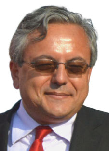
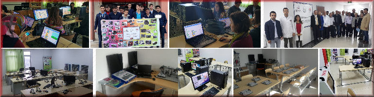

|
Hangi Şirketlere Ortak Olunmaz?
Türkiye’de yüz binlerce irili-ufaklı şirket faaliyet göstermektedir. Bunların sadece 485’i halka açılmış haldedir. Sermayenin tabana tam yayılması için binlerce nitelikli şirketin halka açılma zamanı gelmiştir.
Halkı kendine ortak eden bir şirket faiz ödemeden kaynak (finansman) temin etmiş olur. X şirketinin 500 milyon TL sermayesi olsun. Bunun yüzde 20-30-40’ını halka açmakla bir şey kaybetmez.
Az miktarda tasarrufu (birikimi) olan insanlar bununla ticari bir işletme kuramazlar. Devletin ciddi denetimiyle halka açılan şirketler sayesinde tasarruflar üretime, sanayiye kanalize edilmiş olur.
Türkiye’nin menkul kıymetler borsası 1986 yılında faaliyet göstermeye başladı. Aradan geçen 36 yılda halka açılan şirketlerin 100 adet kadarı çeşitli oyunlarla batırıldı ya da battı.
2022 yılı itibariyle İstanbul Menkul Kıymetler Borsasında (İMKB ya da BİST) 485 şirketin ortaklık senetleri (hisse, pay senedi) işlem görmektedir. Bunların bazıları tabela şirketi hükmünde olup ortaklarına reel olarak kâr sağlamaz.
Amatör bir yatırımcının ya da finansal okur-yazarlığı olmayan kişilerin hileli, çürük, zarar eden, değersiz, batmakta olan şirketleri tespit etmesi zordur.
Banka faizlerinin enflasyona oranla çok düşük olması, döviz, altın, repo, tahvil, bono, kripto emtia, beton vb. gibi enstrümanların düşük kazançlar sunması nedeniyle son 2 yıldır BİST’te işlem gören pay senetlerinin fiyatları yılda ortalama yüzde 100-1500 oranında artmaya başlamıştır. Bu cazip kazanç sebebiyle 4 milyona yakın insanımız hisse senedi piyasasında alım-satım yapmaya yönelmiş durumdadır.
Kişisel tespitlerime göre 485 şirketin yüzde 90’ı son 10 yılda ortaklarına reel olarak kazanç sağlamış değildir. Yani 10 yıl önce 1000 dolar karşılığı TL ödeyerek X senedini aldınız diyelim. Günümüzde bu senedi sattığınızda yine 1000 dolar paranız oluyorsa zarar ettiniz demektir. Zira, ABD’de de ortalama yüzde 3-10 arasında bir enflasyon söz konusudur. 10 yıl önceki 1000 doların alın gücü aradan geçen süreçte 600-650 dolara inmiştir. Başka bir deyişle 10 yıl önce 1000 dolar ile 1000 adet ekmek, 1000 adet çikolata, 1000 adet bisküvi, 1000 adet zeytin alabiliyorken bugün bunun 3’te 2’sini alabilirsiniz.
O halde,
borsadan doğru hisseyi almak çok yüksek dikkat, uzmanlık,
araştırma, tetkik isteyen bir durumdur. Sağdan-soldan alınan
duyumlarla hisse alıp-satanlar 1-3 yıl içinde
batmaktadırlar. |
|
Borsada Soyulmamak İçin Kötü Şirketlere Ortak Olmayın
Ali Özdemir / 06.12.2022 |
|
Yazılım
“Sınav en iyi
öğretmendir” sözü gerçekten çok doğrudur. 1974 yılından beri
48 yıldır öğrenciyim. Her gün yeni bir şeyler öğreniyorum.
Okumadan, yazmadan geçirdiğim bir gün yok diyebilirim.
İlkokulu bir
dağ köyünde okudum. Beş sınıf bir arada ders gördüğüm fakir
zamanları çok berrak anımsıyorum. Kara lastik ayakkabım,
yamalı pantolonum, elde örülmüş kazağım ve beyaz yakalı kara
önlüğüm vardı. Önlüğün kumaşı sanırım çok kaliteli değildi.
Ön kısmı didik didik olmuştu. Ortaya çıkan kıvrımlı tüyleri
yolardım ama alttan yeniden tüyler çıkardı. Orta okula giderken her gün 6 km yol yürüdüm. Bir kabanım, botum, kalın elbiselerim olmadığı için karlı yollarda titreye titreye derse yetişirdim. Sınıfın girişinde kalın saçtan üretilmiş kocaman bir soba vardı. Onunla biraz içim ısınırdı.
1979-82 yılları arasında sağ-sol kavgaları, askeri darbe süreci arasında ortaokulu bitirdim. Hiçbir dersi layıkıyla öğrenemedim. Zira dersler çoğunlukla boş geçiyordu ya da branş harici öğretmenler ders veriyordu. Din öğretmeninden İngilizce, tarih öğretmeninden beden eğitimi dersi aldım. Ayrıca bazı öğretmenler derste bize solcu, sağcı fikirleri iletmeye çalıştılar.
Babam elektrikçi olduğu için ben de meslek lisesine giderek elektrik bölümünde okudum. Üniversitede de 4 yıl elektrikle ilgili dersler okudum.
32 yıl boyunca MEB’in 10 farklı okulunda elektrik-elektronik içerikli dersleri öğretmeye çalıştım. İlgi alanımda olan iki branş her yıl ilerleme kaydediyor. Matematik, tarih, coğrafya, İngilizce, din gibi derslerde onlarca yıl pek bir değişim olmuyor. İçeriği her yıl değişen elektronik ile hala meşgul olmaktayım. Son 20 yıldır akıllı olarak tabir edilen, kodlanabilen / programlanabilen sistemleri öğrenmeye, öğretmeye çalışmaktayım.
Türkiye’nin okullarında öğrenim gören 19 milyon civarı temel eğitim öğrencisinin tümünün mutlaka bir yazılım, kodlama dersi alması gerektiğini düşünüyorum. Zira bu ders tıpkı felsefe, mantık, satranç, matematik gibi düşünmeyi, tasarlamayı, üretmeyi öğretmektedir.
Matematik dersinde oran, olasılık, türev gibi onlarca konu öğretiliyor. Bu bilgileri kitlenin yüzde 99’u pratikte hiç kullanmıyor. Yazılım dillerinin öğretildiği dersler çevrimiçi (online) yapılabilir. Web sitesi üzerinden yayınlanabilir. İsteyen istediği vakit konuları çalışır. ÖSYM, yaptığı sınavlarda 5-10 yazılım sorusu sorar…
MEB bu hususa mutlaka el atmalıdır. Sadece meslek liselerinin elektrik, elektronik, bilgisayar alanlarında sınırlı biçimde kod yazmanın öğretilmesi bizi yükseltmeyecektir.
Son 30 yıldır yılda ortalama 25-30 kadar yazılımı kullanıyorum. Bunların hiçbirisi maalesef bizim uzmanlarımız tarafından üretilmiş değil. Çizim, sunum, tasarım, simülasyon, robotik yazılımlarını hep ABD, Almanya, Çin, İsrail, Kanada, İngiltere vb. gibi ülkeler piyasaya sürüyor.
Son söz: Çocuklarınıza yazılım dilleri öğretmenin yollarını arayıp bulunuz.
Ali Özdemir / Eğitimci-Yazar-Yayıncı / 13.11.2022 |
|
Nitelikli Öğretmenler Artmalı 
MEB'te 32 yıl öğretmenlik yaptım. Anadolu’nun çeşitli il ve
ilçelerinde bulundum. Halen özel sektörde çalışmaya devam
ediyorum. Mesleki yeterliliklerimi artırabilmek,
sürdürülebilirlik noktasında başarılı olabilmek için de
çeşitli konularda bilgi veren 60 civarı kitap yazıp topluma
sundum…
81 vilayetin, 930 ilçenin milli eğitim müdürlerinin,
valilerinin, kaymakamlarının eğitim noktasındaki vizyonu
(anlayışı) endüstri 4.0 seviyesine gelmeden aşama
kaydetmemiz zor görünüyor.
32 yıl boyunca çalıştığım ilçe ve illerde ödüllendirilen,
öne çıkarılan, pohpohlanan öğretmenlerin çoğunlukla
yetersiz, donanımsız, liyakatsiz olduğuna şahit oldum. https://www.youtube.com/watch?v=hl1_EcISIPc
|
|
Başarı, ciddiyete mahkûmdur İngiltere’ye gitmiştik. Bu ziyaret sırasında, İngiltere’nin en başarılı birkaç okulunu görmek istedik. İngiliz bir eğitimci bize Eton College ve The Abbey School’u ziyaret etmemizi tavsiye etti.
15.01.2021 |
|
Özel Meslek Liseleri Gurur Verici İşler Yapıyor
2021 yılı itibariyle 200 kadar özel mesleki-teknik lisemiz
var. Bu okullarda 100 bin kadar çocuğumuz eğitim almakta.
MEB’e bağlı meslek lisesi sayısı ise 4 bin 500 civarında. Bu
okullarda ise 1 milyon 750 bin genç mesleki eğitim görüyor.
Bu sayının bir kat daha artması icap etmektedir. @aliozdemir_net - 09.11.2021 |
|
Milli Eğitim Müdürüne Açık Mektup
Türkiye'nin en güzel tabiatına sahip olan illerinden
birisinde, kara elmas diyarında yöneticilik yapıyorsunuz.
Size gerçekten üstün başarılar ve sabır dilerim. |
|
Tapu…
1995 yılında babam vefat edince 236 metrekarelik minik bir
arsayı 4 kardeş olarak üzerimize almak istedik… 25 yıl önce
bürokratik işlemler yüzünden akla karayı seçmiştik.
Ali Özdemir - 06.07.2021 |
|
Ne yiyip içeceğiz?
Hekim değilim. Yazdıklarım sadece kişisel görüşlerimdir. Her
gün yeni bir bilgiye ulaşmaya devam ediyorum. Sağlıklı yaşam
noktasında hala öğrenciyim.
Ali Özdemir - 30.06.2021 |
|
Mehmet Âkif Bize Ne Diyor?
1989 yılından beri eğitimcilik yapıyorum. Öğrenciliğimi de
sayarsam 1974 yılından beri yazıyla, okumayla, öğrenmeyle
meşgulüm. |
|
Çocuklarınızı Yazın Kurs ve Etkinliklere Gönderiniz
“Saldım çayıra, mevlam kayıra” demeyiniz. Evlatlarınıza yol
gösteriniz. Onları çağın gereklerine uygun yetiştiriniz...
|
|
Meslek Liselerine Olumlu Bakalım
Belki haberi olanlar vardır ama ben yine de yazayım. MEB meslek liselerinin önünü daha da açmak için çok önemli bir yeniliğe imza attı.
Bir öğrenci meslek lisesinin 9, 10, 11. sınıflarında çok başarılı olur ise 12. sınıfta akademik (genel bilgi) derslerinin daha çok olduğu özel sınıfa geçiş yapabilecek.
Başka bir deyişle, X öğrenci meslek lisesinin Y bölümüne kayıt olarak okumaya başladı diyelim. 12. sınıfa gelince mühendis, hekim, öğretmen, hukukçu, araştırmacı, akademisyen olmak isterse, üniversite sınavında soruların çıktığı derslerin bulunduğu sınıfa geçiş yapabiliyor.
Mesleki ve teknik Anadolu liselerindeki öğrencilerin kariyer planlamalarına destek olmak amacıyla "Akademik Paket" modeli uygulamasını hayata geçiren Bakanlık, Anadolu meslek programı öğrencilerinin 12. sınıfa geldiğinde işletmelerdeki beceri eğitimine devam edebilmesi ya da kendilerine uygun akademik alanı seçerek yoğun akademik eğitim alabilmesi imkanını sunacak.
Anadolu meslek programı öğrencilerine ya işletmelerdeki beceri eğitimine devam edebilmeleri ya da kendileri için hazırlanmış 4 akademik eğitim modelinden birini seçerek haftada 5 gün akademik eğitim alabilme imkanı sunulacak.
Öğrencilerin bu eğitim modelinden yararlanabilmeleri için 9, 10 ve 11. sınıftaki akademik ders ortalamasının 70 puan üzerinde olması ve 11. veya 12. sınıfın sonunda 40 gün stajlarını tamamlaması gerekiyor.
Öğrenciler okula geldikleri 5 gün boyunca haftada 31 saat akademik eğitim alacaklar. Stajlarını ise 11. ya da 12. sınıfın yaz döneminde yapabilecekler.
Ek bilgi için meslek.eba.gov.tr adresine de bakabilirsiniz. Ali Özdemir - 11.06.2021 |
|
Pardus
|
|
Kod
|
|
Vasatlığa dur deyin
|
|
Her insan niteliğine göre muamele görür
76 yaşında olan anam, 31 yıl önce yapılan düğünüme kimin katılıp ne tür bir “hediye” sunduğunu hatırlar. Bir yakınımızdan düğün, nişan, nikah, sünnet davetiyesi geldiğinde hemen anama sorarım. Şunu der: “Onlar senin düğününe 600 km yol kat ederek gelip altın taktılar. Sen de aynı şekilde hediye sunmalısın.” Ya da “O aile bizim hiçbir düğünümüze, mevlidimize, cenazemize gelmedi. Sen de gitme…”
20-30’lu yaşlarımdayken bunları çok önemsemezdim. 50’yi geçince anamın sonuna kadar haklı olduğunu idrak ettim…
Ukalalık olarak anlamayınız. Arapların “Men dakka dukka” (kapı çalanın kapısı çalınır, eden bulur) şeklinde bir sözleri var. Bunu nedense pek severim. Söylerken, tekerleme gibi gelir bana…
Günlük hayatımda ya da iş ortamında çevremdeki insanlara onların tutumuna göre tavır alırım. Sürekli olarak sistemi bozan, kaliteye, etiğe, ahlaka, huzura çomak sokanları hemen hayat dairemden çıkartırım.
Bu ülkeye çivi çakan, görevini şevk ile ibadet gibi yapan insanları ise her zaman desteklerim.
“Bu paraya bu kadar çalışılır. Beş dakika geç kalmakla bir şey olmaz. Çalış çalış nereye kadar. Bayram tatili 9 gün olsa ne iyi olur. Yine mi toplantı var. Bugün hiç çalışmak istemiyorum vb.” diyen insanlardan öcü gibi kaçarım.
Dünya üzerinde 8 milyar insan var. Türkiye’de ise 84 milyon. Kaba bir hesapla gezegendeki insanların yüzde 1’lik dilimi bu topraklarda yaşıyor. Ancak, bu koca kitlenin dünya ekonomisine katkısı yüzde 1 olmayıp, yüzde 0,2 nispetindedir. Yani 5 kat daha fazla çalışmamız, üretmemiz, ülkeyi büyütmemiz icap ediyor.
6,5 milyonluk İsrail 165, 40 milyonluk Güney Kore 640, 17 milyonluk Hollanda 700 milyar dolarlık dışsatım yaparken biz 160-180 milyar doları geçemiyoruz. Bu rakam Güney Koreli Samsung firmasının 1 yıllık cirosu kadar olup bize yakışmamaktadır.
21. yüzyılda her evi, köyü, okulu, üniversiteyi atölyeye, imalathaneye çevirmenin yollarını aramalıyız.
Sonuç olarak, her insan kalitesine, kalibresine, yeteneğine, duruşuna göre muamele görür. Çevresine kötülük saçan insanlar asla saygı, sevgi, hürmet bulamaz. 21.05.2021 |
|
Meslek Sahibi Olmak
Okur yazar bile olmayan babam 1960 yılında İstanbul’da er
olarak askerlik görevini yaparken elektrik, su, duvar, boya
vb. işlerini diğer çalışanlara yardım ederken öğrenmişti… 56
yıllık ömründe 1 gün bile izin kullanmadı. 1995 yılında
aramızdan ayrıldı. Ali Özdemir - 02.09.2021 |
|
Değer Üreten İnsan Olmak
Bazı insanlar 15-20 sene okula gitse de üretici bir mesleğin
sahibi olamaz. Toplumda asalak olarak yaşar. “Meslek”
kavramı bize şunu söyler: Yaptığınız iş dünyanın her yerinde
size aş sağlıyorsa; yeterli donanımınız var demektir.
Diplomanız Edirne’nin ötesinde geçerli değilse boşuna okula
gitmişsiniz diyebiliriz. |
|
Gâvurun Parasını Alan Ağlamasın
Yabancı ülkelerin paralarını satın alıp evinde saklayanların
“Döviz artıyor, hayat pahalılığı
bitmiyor, geçinemiyoruz” diye ağlamaya hakkı yoktur.
Ali Özdemir - 18.10.2021 |
|
Kuşburnu
Dağlarda kuşburnu topluyordum. 60’lı yaşlarda bir aile de
ormanda dolaşıyordu. Yanlarına gittim. Adam ve kadın şunları
söyledi: “Yazın ve sonbaharda boş kaldığımız her vakitte
dağlardan kuşburnu, alıç, kızılcık, erik, elma, mantar,
ahlat, armut vb. toplarız. Bu işi yıllardır yapıyoruz.
Topladığımız yabani ürünleri semt pazarlarında 10-30 TL
arası fiyatlarla satıyoruz. Bu işten bir asgari ücretli
kadar para kazanıyoruz. Belediye pazarda işgaliye ücreti
olarak bir çay parası alıyor. Vergi kaydına tabi değiliz
vb.” |
|
Azimli Girişimci
Bazı insanları topluma "öldükten" sonra tanıtmanın pek bir
anlamı yoktur. Önemli olan onu "yaşarken" topluma örnek
göstermektir. |
|
Meslek
Herkes masabaşı memuru olursa üretim söz konusu olmaz.
Almanya’nın sanayi devi olmasını sağlayan unsur
mesleki-teknik eğitime çok önem vermesidir.
Evladınızın özelliklerini ortaya çıkarmak için rehber
öğretmenlerden, ilk-orta okul öğretmenlerinden, çevrenizdeki
bilgili insanlardan veri toplayabilirsiniz.
Meslek liseleri kabuk değiştirmiştir. Evladınıza bu okulları
da tanıtınız. Önyargılarla karalama yapmayınız. Ali Özdemir - 09.07.2021 |
|
Koç
Ali Özdemir @aliozdemir_net
Futbol Zararlı, Tasfiye Edin…
Ali Özdemir
MUCİT... Daha yedi yaşlarında babamın çiftliğinde traktörle çift sürüyordum. Traktör makine ve ekipmanlarına merakım daha o yaşlarda başlamıştı. Öğretmen Okuluyla birlikte Çınarlı Meslek Lisesinin Radyo-Elektronik bölümünün gece eğitimini bitirdim. Öğretmen okulunda öğrenciyken müdürümüz Tevfik Elmas'ın teşvikiyle, tarihte ilk defa Radyo-Elektronik kolunu kurdum. 19 yaşımda bir dağ köyüne tayin olduğumda, bilgilerimi hayata geçirmeye can atıyordum. O yıllarda Grundig marka transistörlü radyolar dokuz yüz, öğretmen maaşı da dört yüz elli liraydı... Yani bir transistörlü radyo, iki öğretmen maaşına, bugünkü değeriyle altı bin liraya satılıyor, milletimiz düpedüz soyuluyordu. İzmir Çankaya Caddesinde elektronik hurdacıları vardı. Atılmış radyo kondansatörleri radyonun kalbidir, gerisi kolay! Hurdacıdan aldığım parçalarla bir radyo otuz liraya mal oluyordu. Öğretmenlik yaptığım dağ köyünün, elinden marangozluk da gelen muhtarı İrfan, muhtarlık binasında bana yer verip bir de çalışma masası yaptı. İşe koyulup radyo elemanlarını monte ettim. En sona hoparlörü kalınca, muhtara: -“Tut şu kablonun ucunu, hoparlörün dibine değdir” dedim. Değdirdiği gibi oyun havaları patladı! Ankara radyosu çalıyordu! Muhtar radyoyu kapıp sevinçle dışarı fırladı: -“Öğretmenimiz radyoyu icat ettiii!” diye bağırarak köy meydanındaki kahveye koştu. Köylü merakla kahveye doluştu. -“Üleen dokuz yüz gaymelik iş bu muymuş” diyorlardı. Onlar : -“Öğretmenimiz radyo icat etti “ dedikçe, Ben -“Değil başkası icat etti, ben imal ettim” diye uyarsam da, onlar inatla : -“Sen icat ettin” diyorlardı. Önce muhtara, sonra da köylülerime radyo yapmaya başladım. Muhtar radyolara kutu yapıyor, hoparlör çıkışının deliklerini açıyordu. Kutunun yan tarafındaki kondansatör düğmesinden arama yapılıyor, skala olmasa da istasyonlar pekala bulunuyordu. Kimseden para da almıyordum ama onlar da çeşit ikramla memnuniyetleri gösteriyordu. Radyoya kavuşmaktan herkes çok mutluydu. Bir gün, bizim Uzun Memet radyosunu ağaca asmış tarlada çalışırken, devriyeye çıkan jandarma başçavuşu görüp yakalamasın mı? - Nedir ülen bu? - Radyo başefendi. - Böyle radyo mu olur ülen? - Öğretmenimiz icat etti. - Neee, kaçak radyo yapmış, tut onbaşı, zabıt tut! Zaptı tutmuşlar. O yıllarda öğretmenlerin milletvekili gibi dokunulmazlığı vardı. Jandarma ya da polis karakoluna çağıramazlar, Milli Eğitim Müdürü ifade alır, gerektiğinde savcılığa sevk ederdi. Milli Eğitim Müdürümüz Ahmet bey, öğretmenimiz bana bir uğrasın diyecek kadar kibardı.. Yanına varınca beni alıp Kaymakama çıkardı ve: -“ O muhteşem mucit bu! “ dedi ve kaymakam da suçumu yüzüme tebliğ etti. Radyoların yıllık vergisi vardı ve vergi kaçakçılığı nedeniyle radyo başına para cezası kesiliyordu. İzinsiz radyo imal etmek de casusluk gibi bir şeydi, yani sonu hapis cezası. Savcılığa sevk etmemek için, önce takdir edip, sonra bir sürgün cezası ile işi kapatarak, Ödemiş Bozdağlardaki Kızılkeçili köyüne sürgün ettiler! Soruşturma kapanmış ama yurdumun geri kalmışlığının yaraları kapanmamıştı!! Bahar aylarında Bozdağlar'a geldim, İsviçre gibi bir yer! Bozdağların tepesinde son köy Karakeçili, buradan öteye sürülecek yer yok! Köyü gezerken, içinde alabalıkların oynaştığı dere boyunda terk edilmiş üç su değirmeni gördüm. Elektriklisi çıkınca, bunların pabucu dama atılmış! Birinin suyu var, kapağı kapatınca tribünden çıkan su insana çarpsa parçalar! Yazık boşa akıyor ! O yıllarda hiç bir köyde elektrik yok. Hafta sonunu dar ettim. İzmir Sanayi Bölgesinde Manisalı Ahmet Tütüncüoğlu’nu buldum. Derdimi anlatınca yardımcı olup, jeneratör için gerekli parçaları bulmamı sağladı. Alternatör, voltaj aralığı sağlayan kolektör ve kondüktör, jeneratörün miline monte edilecek kayış ve tribün kanatlarını kaynak yapacağım değirmen çarkı. Ahmet bey, o iyi yürekli insan, hepsini köyüme kadar kendi cipi ile getirdi. Bir kaç günde montajı tamamladım. Köy kahvesine, okuluma, camiye ve köy meydanına kılavuz aydınlatma için kablolar çektim. Açılış için akşam karanlığını seçtim. Köylü merakla toplanmış bakarken, suyun kapağını açınca, ortalık gündüz gibi aydınlık oldu. Suyun gücü neredeyse on beş köyü aydınlatacak elektriği üretebilirdi. Köylü sevinçten çığlık atıyordu.. -“Sakın öğretmenimiz icat etti diye kimseler söylemeyin, başıma iş açarsınız” diye hepsine tembih ettim. O gece devreyi hiç kapatmadım, nasıl olsa bedavaydı! Sabaha kadar efeler zeybek oynadı, kimi duayla, kimileri namaz kılarak karanlıktan kurtuluşu kutladı. İki gün sonra basıldık. Tüm ilçe jandarması köyü basmıştı. - Emir aldık, sökün bunları yoksa fena olur! Söktük. Kasabaya indim ve -“Sizin mevzuatınıza da, palavra eğitiminize....” diyerek istifamı verdim.. Oradan denizlere açıldım. Uzak ülkelerde çalıştım. Önce telsiz ve güverte vardiya zabitliği, ardından süper tanker süvariliği. Yıllar sonra memlekete döndüğümde gördüm ki; Türkiye’de değişen bir şey yoktu!!..
Nedim ÇAKMAK
Tehdit…
|
|
18 dakika kuralı
|
|
İcat çıkarmak kolay değil
Tembel, yeteneksiz, idealsiz insanlar başarı peşinde koşanları daima engellemiştir. Bugün çok tanınan, varlıklı, başarılı bir çok insan kolayca zirveye ulaşmış değildir. Hepsinin öyküsü zorluklar içerir. Bazılarını biraz konuşturalım...
Jack Ma: “Üniversitede 3 yıl sınıfta kaldım. 30 iş başvurusunun tümünden red cevabı aldım. Harvard Üniversitesine 10 kez başvurdum. Hep red ettiler. Alibaba.com adlı e-ticaret sitesini açtım. 38 milyar dolarlık servet ile Çin’de 1. sıraya yerleştim.”
Ingvar Kamprad: “6 yaşımdayken kibrit satmaya başladım. 10 yaşımda kapı kapı gezerek yılbaşı süsleri sattım. Basit tasarımlı mobilyalar satan 370 IKEA mağazası açtım. 60 milyar dolarlık servete sahip oldum.”
Leonardo Del Vecchio: "1935 yılında doğdum. Ben doğmadan babam ölmüştü. Annem yoksul olduğu için beni yetimhaneye verdi. Ergenlik yıllarımda bir demir fabrikasında işe girdim. Burada madalya ve rozet üretiminde çalıştım. Geceleri de üniversiteye gittim. Mezuniyet sonrası fabrikada makinist oldum. Burada epey çalıştım. Sonra gözlük üretimi işine başladım. Ray Ban, Oakley, Prada Versace, Armani, Bvlgari, Polo, Chanel, Dolce Gabbana gibi gözlüklerin üretimini yapan Luxottica şirketini yarattım. 25 milyar dolarlık servet yaptım.”
Phil Knight: “Japonya’dan getirilmiş ayakkabıları arabamın bagajında satarak işe başladım. İlk Nike marka ayakkabıyı mutfak tezgahında ürettim.”
Jan Koum: “Babam Ukrayna’da inşaat işçisiydi. Annemle ABD’ye göç ettik. Validem orada bebek bakıcılığı ve temizlikçilik yaptı. Bilgisayara çok ilgim vardı. Yahoo’da işe başladım. Sonra Whatsapp uygulamasını geliştirip Facebook’a 19 milyar dolara sattım.”
Gabrielle Coco Chanel: "1883’te Fransa’da doğdum. Yetimhanede büyüdüm. Burada terzilik öğrendim. Zenginler için elbiseler tasarladım. Mağazalar açtım. Channel markası lüks kesime ait oldu. 19 milyar dolarlık servete eriştim.”
Ferruccio Lamborghini: “İşe traktör yaparak başladım. Daha sonra dünyanın en hızlı giden otomobillerini yaptım.”
Larry Ellison: “Babam bizi terk etti. Annem ben 9 aylıkken başka bir aileye evlatlık verdi. Zeki olmama rağmen okulda başarı gösteremedim. Yazılımlara ilgim çoktu. Oracle firmasını kurdum. 35 milyar dolarlık servete eriştim.”
Eren Bali: "Malatya'nın dağ köyünde doğdum. Üniversiteyi yarıda bıraktım. Silikon Vadisine gittim. Fikrimi 57 yatırımcı reddetti. Pes etmedim. Şu an milyar dolarlık bir şirketim var."
Eren Özmen: "Bana hep başarısız gözüyle baktılar. NASA’ya uzay aracı yapımı işinde çalışan, 4000 personeli olan bir şirketim var.”
Bill Gates: “Grafiksel ara yüzü ve faresi olan bir bilgisayar yaptım. Bunun projesini bir firmaya sundum. Patron kağıtları yüzüme fırlattı. Microsoft’u kurdum. 20 yılda dünyanın en büyük 5 firmasından biri ortaya çıktı.”
Jeff Bezos: “Üvey babam tarafından yetiştirildim. 16 yaşıma kadar çobanlık yaptım. Sonra internet işine girdim. Amazon’u kurdum. 113 milyar dolarlık servete eriştim.”
Hamdi Ulukaya: "Erzincan ilinin ücra bir dağ köyünde doğdum. Dil öğrenmek için ABD’ye gittim. Oradaki sahte yoğurtlara hiç alışamadım. 5 yıl içinde ABD’nin yoğurt pazarının yarısını ele geçirdim.”
Amancio Ortega: "İşe terzi çırağı olarak başladım. 68 milyar dolar değeri olan ZARA’yı kurdum.”
Soichiro Honda: "Meslek lisesinden atıldım. Bir tamirhanede işe başladım. Kısa sürede ustabaşı oldum. Toyota’ya iş başvurusu yaptım. Almadılar. Ben de Honda’yı kurdum.”
Walt Disney: "Defalarca başarısız oldum. İşlerden kovuldum. Ama pes etmedim. Çizgi filmlerimi dünyadaki 8 milyar insan izliyor.”
Steve Jobs: “19 yaşındaydım. Dan Kottke ile birlikte kolejden ayrılmaya karar verdim. Okulu yarıda bırakıp Hindistan’a taşındım. Neden mi? Felsefi aydınlanmayı bulmak için. Bu olay, hayatımın önemli bir aşamasını, gelecekteki çalışmalarıma da büyük ölçüde ışık tutup derinden etkileyecek bir şeyi, yani sezginin gücünü öğrendiğim dönemi kapsıyor. İlk yıllarda pek çok insan beni mükemmeliyetçi yaklaşıma sahip bir öngörü adamı olarak tanımlıyordu. Ancak güçlü öngörülerim dahi 30 yaşımdayken kendi şirketimden (Apple) kovulmamı engelleyemedi. Sıfırdan inşa ettiğimiz bir şirketin bana tamamen sırtını dönüp, beni aşağılanmışlık duygusu ve derin bir hüsranla, en önemlisi de işsizlikle baş başa bırakabileceğini hayal edebiliyor musunuz? Şirketten kovulmamın ardından geçen 11 yılda Apple iflasın eşiğine gelmişti. Microsoft’un yıldızının parladığı günlerdi. Şirket yetkililerinden gelen çağrıyı geri çevirmedim. İşe geri döndüm. Apple’ı yeni teknolojiler söz konusu olduğunda ilk akla gelen şirketlerden biri haline getirdim.”
Albert Einstein: “Tembel olmanız, bir deha olmadığınız ya da asla başarılı olamayacağınız anlamına gelmiyor. İletişim becerilerim dört yaşıma gelinceye kadar gelişmedi. Ailem bir şeylerin ters gittiğini düşünmeye başlamıştı. Öğrenim hayatım da pek parlak sayılmazdı. İlkokuldan kolej yıllarına kadar tüm öğretmenler beni asi, özensiz ve tembel bir öğrenci olarak tanımladılar. Asla başarılı olamayacağını düşünüyorlardı. Ancak, okulda tembellik gibi görünen şey aslında yalnızca can sıkıntısından ibaretti. Hayatım boyunca kitaplarda yazılan gerçekleri ezberlemekle yetinen bir tip olmadım. Aksine, her daim bir şeyleri analiz etmeyi tercih ettim. Örneğin, gökyüzü neden maviydi? Pusula iğnesi neden tek bir yönü işaret ediyordu? Ne yazık ki, bu bilgileri okulda öğrenmenin imkanı yoktu. 11 yaşındayken Max Talmud ile arkadaş oldum. Talmud, beni bilim ve felsefe üzerine çeşitli kitaplarla tanıştıran 21 yaşında bir tıp öğrencisiydi. Bu öğrenme ortamında kendimi geliştirdim.”
J.K. Rowling: “Harry Potter kitabından önce büyük sıkıntılar yaşadım. Devlet yardımı aldım. Boşandıktan sonra bebeğime bakmakta zorlandım. 90 bin kelimeden oluşan ilk kitabım Harry Potter ve Felsefe Taşı’nı bilgisayarım olmadığı için elle yazdım. Onlarca defa reddedildikten sonra kitabı küçük bir yayınevi basmaya karar verdi. Sonra servetim 1 milyar doları aştı.”
Ludwig van Beethoven: "47 yaşımdan sonra işitmemeye başladım. 9. senfoniyi hiç duymadığım halde besteledim.”
Eşref Armağan: “Doğuştan görme engelliyim. Parmaklarımla yaptığım resimleri tüm dünya biliyor. Sadece ülkemde beni pek tanımıyorlar.”
Cemil Meriç: “38 yaşımda göremez oldum. Kör kör binlerce sayfa yazdım. Ama 30 milyon Türk gencinin 30 bini bile beni bilmez, tanımaz, okumaz.”
Roosvelt: “39 yaşımda yürüyemez hale geldim. Rakiplerim beni sakat diye hep küçümsedi ama 3 kez ABD başkanı seçildim.”
Stephen Hawking: “ALS hastasıydım. Sadece gözlerim hareket ediyordu. Astrofizik alanındaki çalışmalarım hala aşılamadı.”
Stephen King: "Uzun bir süre çok yoksul bir hayat sürdüm. Evlenmek için ödünç kıyafet aldım. Eşimle bir karavanda yaşamaya başladım. Yazmaktan asla vazgeçmedim. İlk yayınlanan ve sadece 35 dolar kazandığım hikayem The Glass Floor’dan önce tam olarak 60 red mektubu aldım. Bugün kitaplarım milyonlarca satılıyor.”
Thomas Alva Edison: “İşitme engelliydim. Okul hayatını 12 yaşında noktaladım. Çocukken bana ‘geri zekalı, beceriksiz’ dediler. Ama 2500’den fazla buluş yaptım.”
Aşık Veysel Şatıroğlu: “6 yaşında çiçek hastalığı nedeniyle göremez oldum. Babam oyalanayım diye bana bir saz aldı. Onunla nice türküler söyledim.”
Stevie Wonder: "Görme engelli olmama rağmen müzisyenlikle ilgili 22 defa Grammy ödülü kazandım."
Harland David Sanders: “6 yaşında babamı kaybettim. 16 yaşımda okul bıraktım. 17 yaşımda 4 işten çıkarılmıştım. Hukuk fakültesine başvurdum. Red edildim. Trenlerde, sigorta işinde, aşçı ve bulaşıkçı olarak çalıştım. Albaylıktan emekli oldum. İlk maaşım olan 105 dolar ile kızarmış tavuk işine girdim. 70 yaşından sonra KFC’yi kurdum. Bugün, dünyanın en büyük 10 yemek firmasından biri oldu.”
Abraham Lincoln: “Başıma gelmeyen bela kalmadı. Ama asla pes etmedim. ABD Başkanı oldum.”
Henry Ford: “Otomobili icat ettim. Fabrika kurup üretime başlayayım dedim. 8 banka beni red etti. ‘At arabaları varken teneke arabaya kim biner’ dediler. 9. banka krediyi verdi. Bugün dünyanın en çok araç üreten şirketi ile karşı karşıyayız.”
Barış Manço: “Lisede müzik dersinden zayıf verdiler bana. Ama yılmadım. Bütün dünyanın tanıdığı bir sanatçı oldum.”
Ali Özdemir
“Sizde ruhsal sorun var”
81- Öğrencilerin ilk ve ortaokulda alamadıkları bilgiler lise yıllarında telafi edilebilir. 82- Her öğrenciye bir spor dalında uzmanlık kazandırılabilir. 83- 9. sınıfların doğru meslek (alan, bölüm) seçmesi sağlanabilir. 84- Öğrencilerin lüks tüketim, marka, moda bağımlısı olması önlenebilir. 85- Kurum, TSE, CE, ISO, 5S, KAIZEN, TMP, öz değerlendirme, stratejik plan hedefleri çerçevesinde yönetilerek 21. yüzyıla yakışan bir ortam haline getirilebilir.
21. Yüzyılda Eğitim ve Öğretmenlik…
Not: Bu kısa yazı 24 Kasım Öğretmenler
Günü vesilesiyle yazılmıştır. Karalama amacı yoktur. Siyasi amaç da
gütmemektedir. Sadece öğretmenlerin içinde bulunduğu koşulları
gözlem seviyesinde aktarmayı amaçlamaktadır.
Kitap yayınlamayı düşünüyorsanız bu yazıyı okuyun
Herhangi bir konuda yazdığınız kitabı okurlara ulaştıracaksanız aşağıdaki hususları bilmelisiniz:
|
|
|
|
Mesleki okulları küçümsemeyin
Meslek lisesi mezunuyum. 30 yıllık süreçte 10 farklı meslek
lisesinde öğretmenlik yaptım. Yaklaşık 500 yıldır bu topraklarda
ticaret ve zanaat işlerini azınlıklar (Musevi, Rum, Ermeni vb.)
yaptığı için Türklere sadece tarım, hayvancılık ve askerlik işleri
kalmıştır. Sanırım bunun etkisiyle bugün de büyük bir çoğunluk
masabaşı işler peşinde. |
|
Elektromanyetik kirlilik sizi öldürüyor
Ucuza mal etmek için hatalı, eksik üretilen cihazları evine alanlar aslında bilerek bilmeyerek suç da işlemektedir. Elektrikli ve elektronik cihazların yaptığı tahribatları görmezden gelmeyelim.
Yıllık 30 milyar dolar civarındaki sağlık harcamalarının yarısının müsebbibi fason, merdiven altı, korsan, patentsiz, hırsızlama üretilmiş bu eşyalardır. Bu konuda hiçbir şekilde insan sağlığına önem vermeyen özellikle Uzak Doğu ülkelerine ait markaları buraya yazarım ama dava ederler.
Uzak Doğu ülkelerinde bütçeye göre her kalitede mal yapılmaktadır... Bir örnek ile anlatayım. Parası az olanlar için frensiz, aynasız, egzozsuz, klimasız, bagajsız, radyosuz, paspassız taşıt üretilebiliyor.
Ucuz diye, kâr ettim diye aldığınız elektronik cihazlarda söndürücü, bastırıcı, harmonik giderici, bloke edici, azaltıcı devreler yoktur. Kalitesiz tabir edilen bu mallar size kanser olarak dönmektedir... |
|
21. Yüzyılın İnsanlarına Ne Öğretmeliyiz? “Zor diye bir şey yoktur, az çalışma vardır.”
|
|
Ders...
Milli Eğitim Bakanı Prof. Dr. Ziya Selçuk ve ekibi dijital çağa
uygun adımlar atmaktadır. 30 yıllık süreçte tanık olduğum
en
dolu entelektüeldir. Konuşmaları, kitapları boş değildir...
Bu yeniliklere hayır diyenleri inceleyin... Karşınıza okumayan,
yazmayan, düşünmeyen, üretmeyen, asalak, hain, zorba, çalışmadan
maaş alan, öğrenemeyen, müflis blok çıkacaktır.
Eğitim konusunda 1 sayfa bile eseri olmayanlar fikir beyan
edememeli...
30 yıllık öğretmen olarak arıcıların, terzilerin, diplomatların,
ayakkabıcıların, kaportacıların, kartonpiyercilerin, kasapların
mesleki konuları hakkında analiz yapmıyorum.
Ömründe bir kitap bile okumamış insanların "Eğitim şöyle olmalıdır"
eksenli beyanlarına dur denilmeli artık.
15 sene okula gittim. Öğretilen bilgilerin yüzde 70'i hiç bir işime
yaramadı.
1989 yılında üniversiteden diploma aldım. O belgenin altındaki
dersler karın doyurmuyor artık.
Dünyanın nereye doğru gittiğini görmek isteyenler Şeref Oğuz, Abbas
Güçlü, Mümin Sekman, Acar Baltaş, Üstün Dökmen, Ahmet Şerif İzgören,
Taha Akyol, Dogan Cüceloğlu, Münir Arıkan, Neva Çiftçioğlu, Oktay
Sinanoğlu, Bill Gates, Jack Ma, Salih Uyan, Ali Erkan Kavaklı, Bahar
Eriş, Aytaç Açıkalın, Turgay Polat, Özcan Köknel, Pervin Kaplan,
Selçuk Şirin, Özgür Bolat vb. uzmanların ne dediğine bir baksınlar
derim... |
|

Bu Günleri de Gördüm
Türkiye'de 11 bin civarında lise var. Bunun 3500 tanesi mesleki ve teknik lisedir. Binlerce lise arasından sıyrılıp, toplam 5 mekan kullanarak, Ülkemizin en kapsamlı, en işlevsel, en gerçekçi, en zengin "tasarım, beceri, kodlama, yazılım, robotik, elektronik, PLC, pnömatik, otomasyon, mekatronik, simülasyon, 3D yazıcı, resim, ebru, ahşap, müzik, zeka oyunları, kültür, fizik, kimya, biyoloji, kısaca STEM (FETEM) özellikli atölyelerini (laboratuvarlarını) hazır hale getirdik.
Temmuz ayı içinde bu 5
mekanın resmi açılış töreni MEB Mesleki ve Teknik Öğretim Genel
Müdürü Sayın Prof. Dr. Kemal Varın Numanoğlu ve diğer davetli
protokol tarafından yapılacaktır... 30 yıllık eğitimcilik
yürüyüşümde bu mutlu günü de gördüm...
|
|
Prof. Dr. Asu Özdağlar... |
|
Göz yaşartan,
ağlatan bir anekdot...
Ajans projeyi uygun gördü ve o zaman görev yaptığım meslek lisesine
169.000 TL’lik malzeme hibe etmişti. |
|
İlaç, hekim bilmeden 100 yıl yaşamak mümkün mü? Dedem Hamdi Özdemir 15 yıl kadar önce 93 yaşında vefat etti. Eczane, hekim, ilaç bilmedi. Köroğlu dağlarının eteğindeki köyümüzde ağırlıklı olarak yoğurt, peynir, tereyağı, kaymak, yumurta, süt, tarhana, ... YAZININ TÜMÜNÜ OKUMAK İÇİN BURAYA TIKLAYINIZ. |
|
Ledli aydınlatmaya geçmeliyiz Türkiye'de 18 milyon aile var. 17 milyon temel eğitimde, 3 milyon yüksek öğretimde olmak üzere 20 milyon öğrenci mevcut. 65 bin okul faaliyette. YAZININ TÜMÜNÜ OKUMAK İÇİN BURAYA TIKLAYINIZ. |
|
Faydalı kitaplar nasıl tespit edilir?
Son yıllarda kitap
okuyan insan pek azaldı. Bilgiyle dolmak isteyenlerden sık sık şu
soruyu işitiyorum: “Hangi kitap niteliklidir?” Onlara şunları
söylüyorum: |
|
2019 yılında ne öğrenelim?
Soğan, ekmek yiyerek yaşayabilirim. Bilimden,
teknolojiden bana ne diyorsanız bu yazıyı okumak için zaman ayırmayın. |
|
İzzet Baysal’a minnettarım
1985-89 yılları
arasında yüksek öğrenimimi yaparken İzzet Baysal Vakfı’nın
kurulduğunu öğrendim. İçinde bulunduğum maddi koşulları anlatan bir
mektubu Vakfa yolladım. Gelen cevapta burs başvurumun kabul edildiği
yazılıydı. |
|
10 yılda Almanya gibi varlıklı olabiliriz
|
|
Projeci olmak
Hayata geçirmek, dünyada eser bırakmak,
insanlığa hizmet etmek üzerine bir düşünceniz var ise bunu
gerçekleştirmek için çeşitli kaynaklardan destek isteyebilirsiniz.
Aslında her düşünce bir projedir. Bütün işler önce düşüncede başlar.
|
|
Biz de Başarabiliriz
Dünyada bulunan
193 - 216 devlette 8 milyar kadar insan yaşıyor. Bunun 79-80
milyonu, yani yüzde 1’i ise ülkemizde bulunuyor. Gezegenin en büyük
16.-17. ekonomisi olan Türkiye’nin neredeyse 3’te 1’i öğrencilik
sürecindedir. 20 milyon temel eğitimde, 7 milyon kadarı ise yüksek
öğretimde bilgi – beceri biriktirme peşinde… |
|
Günde 18 saat dinç olabilmek için
Yadırgayanlar olacaktır. Sağlık uzmanı değilim. Bu konuda bir diplomam yok. Yaklaşık 30 yıldır sağlıklı yaşam üzerine bir çok kitap ve makale okudum. Bunların ışığında kendi sentezimi ortaya çıkardım.
Bir tencereye temiz su, kaya
tuzu, sızma zeytin yağı ya da köy tereyağı, domates salçası, biber
salçası, kırmızı mercimek, yeşil mercimek, sarı mercimek, bulgur,
tarhana, köy eriştesi, chia tohumu, bezelye, haşlanmış nohut, soğan,
sarımsak, biber, ıspanak, pırasa, havuç, ceviz, domates, işkembe,
köy tavuğu eti, temiz işkembe, köy hayvanı eti, kara biber, kırmızı
biber, kekik, keten tohumu, çörek otu, yoğurt, nane, kimyon,
zerdeçal, sumak, susam vb. koyuyorum. Ortalama olarak çorbada 20-30
farklı çeşit gıda oluyor.
|
 slenme,
diyet, adler, stres, evlilik, yönetici, meditasyon, biyoenerji
koçu/terapisti vb. sayısında patlama oldu. İlgili-ilgisiz birçok
insan koçluk (özel hocalık, rehberlik, üstatlık, terapistlik)
yapmaya başladı.
slenme,
diyet, adler, stres, evlilik, yönetici, meditasyon, biyoenerji
koçu/terapisti vb. sayısında patlama oldu. İlgili-ilgisiz birçok
insan koçluk (özel hocalık, rehberlik, üstatlık, terapistlik)
yapmaya başladı. ildir. 50 yıldır bu konuda
projeler üretiliyor ama bir ilerleme kaydedilemiyor.
ildir. 50 yıldır bu konuda
projeler üretiliyor ama bir ilerleme kaydedilemiyor.